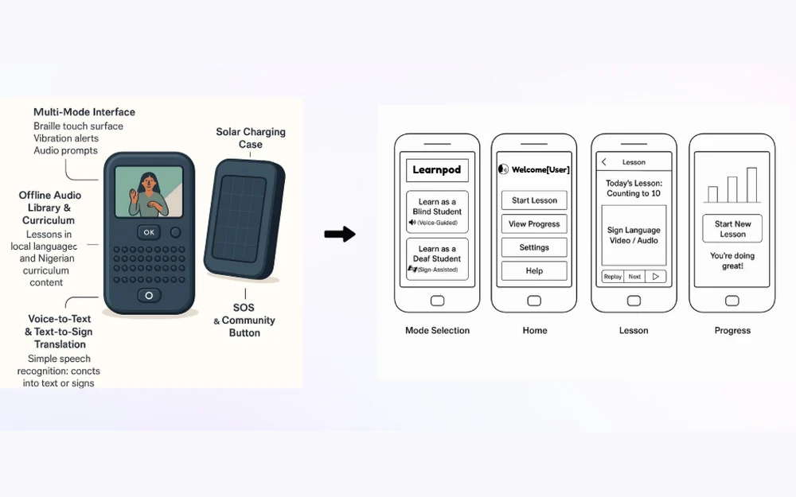

Featured
LearnPod
Offline-first learning for low-connectivity classrooms
Many underserved communities cannot rely on stable internet or consistent power, which makes conventional online learning platforms ineffective. LearnPod is designed offline-first, with accessibility as a hard constraint rather than a later pass.
- Local content storage on a lightweight database
- Linux-based environment for stability and control
- Offline access with periodic manual updates
- Hardware-aware, low-power system design